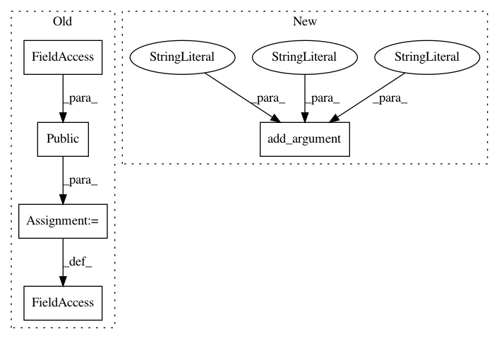

29db4abdbeb839340ac5b0caf934ebda93892934,cnvlib/commands.py,,,#,328
Before Change
// reference -------------------------------------------------------------------
do_reference = public(reference.do_reference)
do_reference_flat = public(reference.do_reference_flat)
def _cmd_reference(args):
After Change
P_autobin.add_argument("-t", "--targets",
help=Potentially targeted genomic regions, e.g. all possible exons
for the reference genome. Format: BED, interval list, etc.)
P_autobin.add_argument("-b", "--bp-per-bin", type=float, default=100000.,
help=Desired average number of sequencing read bases mapped to each
bin. [Default: %(default)s])
P_autobin.add_argument("--target-max-size", type=int, default=20000,
help="Maximum size of target bins.")
P_autobin.add_argument("--target-min-size", type=int, default=20,
In pattern: SUPERPATTERN
Frequency: 3
Non-data size: 5
Instances
Project Name: etal/cnvkit
Commit Name: 29db4abdbeb839340ac5b0caf934ebda93892934
Time: 2017-02-24
Author: eric.talevich@gmail.com
File Name: cnvlib/commands.py
Class Name:
Method Name:
Project Name: etal/cnvkit
Commit Name: 29db4abdbeb839340ac5b0caf934ebda93892934
Time: 2017-02-24
Author: eric.talevich@gmail.com
File Name: cnvlib/commands.py
Class Name:
Method Name:
Project Name: etal/cnvkit
Commit Name: 29db4abdbeb839340ac5b0caf934ebda93892934
Time: 2017-02-24
Author: eric.talevich@gmail.com
File Name: cnvlib/commands.py
Class Name:
Method Name: